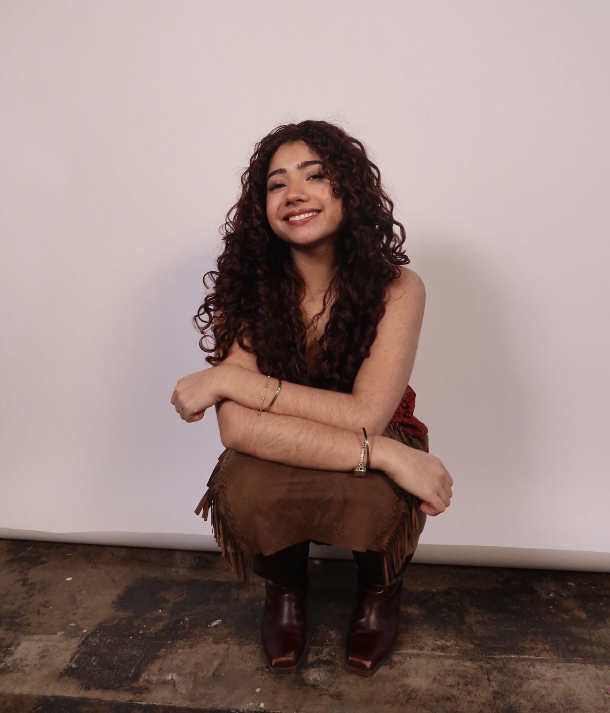

Hi I’m
I’m a Senior in Communication Design student at Parsons School of Design, I was raised in Mexico City and the city of San Francisco and currently live in New York City. My work consists of Graphic Design, Product Design, UI/UX, Creative Coding and Printmaking. I see design as a language of connection a way to communicate ideas across audiences and contexts. I’m also a Positive and energetic designer ready to begin and expand your ideas into life and bring a positive joyful energy into the work!
When I’m not designing im dancing Salsa, Bachata or Cumbia and watching movies. I also love to create prints I specialize in screen printing but have works with all type of prints.
